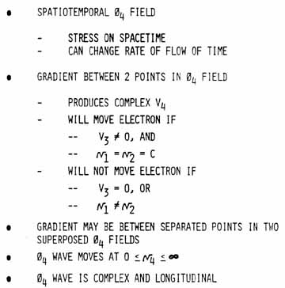
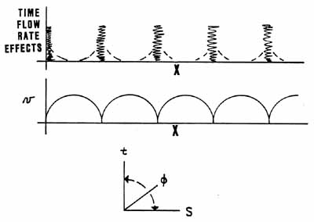

|
TESLA'S SECRET AND THE SOVIET TESLA WEAPONS
© T.E. Bearden 1981
With Special Drawings by Hal Crawford
Before the turn of the century, Nikola Tesla had discovered and was utilizing a new type of electric wave. Tesla repeatedly stated his waves were non-Hertzian, and his wireless transmissions did not
fall off as the square of the distance. His discovery was apparently so fundamental (and his intent to provide free energy to all humankind was so clear) that it was responsible for the withdrawal of his financial backing, his deliberate isolation, and the gradual removal of his name from the history books.
By 1914 or so, Tesla had been successfully isolated and was already nearly a "nonperson."
Thereafter Tesla lived in nearly total seclusion, occasionally surfacing (at his annual birthday party for members of the press) to announce the
discovery of an enormous new source of free energy, the perfection of wireless transmission of energy without losses, fireball weapons to destroy whole armies and thousands of airplanes at hundreds of miles distance, and a weapon (the "Tesla Shield," I've dubbed it ) that could provide an impenetrable defense and thus render war obsolete.
In my pursuit of Tesla's secret,
it gradually became apparent to me that present orthodox electromagnetic theory is seriously
flawed in some fundamental respects. One of these is in the definition and use of
φ, the scalar electrostatic potential. It is this error which has hidden the long-sought unified field theory from the theorists.
In the theory of the scalar electrostatic potential (SEP), the idea is introduced of work accomplished on a charge brought in from a distance against the scalar field.
The SEP is not a vector field, but is a scalar field. Indeed, scalar potential cannot of itself perform work on a charged mass; if it could do so, then tremendous force would exist on every mass due to the extremely high SEP of the vacuum itself.
Only a differential of SEP between two spatial points can produce force or accomplish work.
(Rigorously, a differential of scalar potential between two spatial points constitutes a vector.
Only a vector can produce force and do work.)
Also, work can only be done on a mass.
Further, it takes time* to move an electron or other charged mass between two spatial points, and so the work performed by a spatial differential of the
φ-field requires time. Rigorously, the delta SEP is voltage, not SEP per se, and is directly related to E field.
The entire voltage concept depends on the work performed in moving a mass, after that mass has moved.
The idea of "voltage" always implies the existence of a steady differential of
φ between two spatial points for a finite length of time, and it also involves the assumption of a flow of actual mass having occurred.
SEP, on the one hand, is always a single-point function; on the other hand, difference in potential
(i.e., V) is always a two point function, as is any vector.
Yet many graduate level physics and electromagnetics papers and texts erroneously confuse
φ and V in the static case! Such an interpretation is of course quite incorrect.
* Two spatial points involve at least
Δt = ΔL/c in time. All vectors and gradients involve 2 separated spatial
points, and thus present timelines in 4-space. φ4
is a point, not a line, in 4-space.
Another
common assumption in present EM theory -- that the electrostatic potential (φ0)
of the normal vacuum is zero --
has no legitimate basis. In fact, we know φ0 is nonzero because the vacuum
is filled with enormous amounts of fluctuating virtual state activity, including
incredible charge fluctuations. And by virtue of its point definition, φ0
must be the "instantaneous intensity" of these fluctuations -- but
both in space and time. The scalar electrostatic potential is therefore
the "instantaneous stress" on spacetime itself, and a measure of the
intensity of the virtual state flux through a 4-dimensional spacetime point.
Potential theory was
largely developed in the 1800's, before the theory of relativity.
Time flowrate was then regarded as immutable. Accordingly, electrostatic
"intensity" was chosen as "spatial intensity," with the connotation of
"spatial flux density." This assumes a constant, immutable rate
of flow of time, which need not be true at all if we believe relativity.
Such a spatial "point" intensity is actually a "line" in
4-space, and not a 4-dimensional "point" at all. Thus the spatial potential
-- φ3
-- is a very special case
of the real spacetime potential -- φ4, or charge and electromagnetic theory today
is accordingly a special case of the real 4-space electromagnetism that actually
exists! Note also that charge is a 4-dimensional concept.
Now mass is a
spatial, 3-dimensional concept. Rigorously, mass does not exist in time --
masstime exists in time. Mass and charge are thus of differing dimensionalities!
Also,
according to quantum mechanics, the charge of a particle -- e.g., of an electron
-- is
due to the continual flux of virtual particles given off and absorbed by
the observable particle of mass. Thus charge also is conceptually
a measure of the virtual flux density, and directly related to
φ.
Further, since the charge exists in time, it is the charge of a
particle of spatial mass that gives it the property of masstime, or existing in
time.
Here a
great confusion and fundamental error has been thrown into the present
EM theory by the equating of "charge" and "charged mass."
As we have seen, the two things
are really very different indeed.
To speak of
a spatial "amount" of charge erroneously limits the basic EM
theory to a fixed time flowrate condition (which of course it was
considered to be, prior to Einstein's development of relativity).
Thus when the limited present theory encounters a
"relativistic" case (where the time flowrate changes), all
sorts of extraordinary corrections must be introduced. The real
problem, of course, is with the fundamental definitions of electrostatic
potential and charge. The spatial "amount" of charge (i.e. the coulomb)
as we presently erroneously use the term, is actually
the spatial amount of observable "charged mass." To
correct the theory, one must introduce the true 4-space SEP and separate
the definitions of charge and charged mass.
Only when a
mass is moved does one have work -- and voltage or vector fields.
(The reason one has voltage and E field connected to a normal
electrostatically charged object in the laboratory is because an excess
of charged-particle masses are assembled on the object, and these masses
are in violent motion! A true static charge would have no E field
at all. )
Table 1. Some Present Theoretical Facts
- POINT
FUNCTION IN SPACE
- LINE FUNCTION IN SPACETIME
- TIME FLOWRATE CONSIDERED IMMUTABLE
- SPECIAL CASE OF Ø4,
. . . . . .,ØN
- PRODUCES VOLTAGE
- PRODUCES E FIELD
- MOVES ELECTRON
- IS AN AREA IN 4-SPACE
* JACKSON, CLASSICAL
ELECTRODYNAMICS, 2ND EDITION, P. 223
Table 2. Some Proposed Ø4
Characteristics

φ-field need
not involve observable mass accumulation, but only charge (virtual
flowrate intensity) accumulation. Accumulated masses are like so
many gallons of water; accumulated charge is like so much pressure on
both the water (space) and the time in which the water is
existing.
Now, if one
varies the SEP solely as a point function, one would have a purely
scalar complex longitudinal wave, and not a vector wave at all.
This is the fundamentally new electrical wave that Tesla discovered in
1899.
Rigorously,
all vector fields are two-point functions and thus decomposable into two
scalar fields, as Whittaker showed in 1903. It follows that any
vector wave can be decomposed into two scalar waves. By
implication, therefore, a normal transverse EM vector wave,
e.g., must simply be two coupled scalar (Tesla) waves -- and
these scalars independently would be longitudinal if uncoupled. An
ordinary transverse EM vector wave is thus two pair-coupled Tesla scalar
longitudinal waves, and only a single special case of the much more
fundamental electromagnetics discovered by Nikola Tesla.
A Tesla
(scalar potential) wave -- i.e., a massless wave in pure φ0,
the stress of the spacetime medium would have very strange
characteristics indeed. For one thing, since it moves in a complex
4-space, it has many more modes of movement than does a simple wave in
3-space. And for another thing, it need not be bound at all by the
speed of (vector) light. In current theory, one φ3-field does not
directly interact or couple with other existing φ3-fields
except by simple superposition. Therefore presently the φ-field
is considered to have no drag limitation at all, hence infinite velocity.
(E.g., as stated in Jackson, Classical Electrodynamics, 2nd edition, page
223.)
Actually, a φ4-wave
can and will interact with some of the other existing φ4-waves
in the medium transversed, and this interaction can involve pair-coupling
into EM vector fields and waves, an interaction not presently in the
electrodynamics theory. The result of scalar pair-coupling creates a
finite amount of vector "drag" on the φ4-wave,
so it then has less than infinite velocity. However, if this drag is small
due to limited pair-coupling, the scalar wave's velocity through the slightly
dragging medium still may be far greater than the speed of vector EM waves
(light) in vacuum. On the other hand, if the pair-coupling is made severe,
the φ-wave may move at a speed considerably below the
speed of vector light waves in vacuum. The velocity of the φ4-wave
is thus both variable and controllable or adjustable (e.g., simply by varying
its initial amplitude, which through a given medium changes the percentage of
pair-coupling and hence the degree of drag on the scalar wave). The Tesla
scalar wave thus can have either subluminal or superluminal velocity, in
contradiction to present theory.
Note that the
scalar wave also violates one of Einstein's fundamental postulates --
for the speed of our "new kind of light" wave is not limited to c, and
need not be the same to every observer. Thus Tesla scalar waves lead to a
new "superrelativity" of which the present Einstein relativity is only
a highly special case!
Table 3. Tesla Waves Can:
-
ESTABLISH STANDING WAVES
- in the earth
- in the ionosphere
-
TAP ENERGY FROM THE EARTH'S
CORE
-
TRAVEL FASTER OR SLOWER
THAN LIGHT
-
CHANGE RATE OF TIME FLOW
-
AFFECT ALL FIELDS,
INCLUDING GRAVITY
-
COMMUTE BETWEEN VIRTUAL AND
OBSERVABLE

Figure 1. Tesla's Standing Columnar Wave
But
let us now look for some subtle but real examples of scalar waves and scalar
pair-coupling in nature. As is well known, a tectonic fault zone can
provide anomalous lights, sounds, etc. from stresses, piezoelectrical activity,
and telluric currents in the earth and through the fault zone. In
examining the fault zone phenomena, I finally realized that a fault zone was
literally a scalar interferometer i.e., if one can have scalar φ4-waves,
they can interfere, either constructively or destructively. Their
interference, however, produces scalar pair-coupling into vector EM waves.
This coupling may be at a distance from the interferometer itself, and thus the
interferometer can produce energy directly at a distance, without vector
transmission through the intervening space. Coupling of φ
waves with the paired scalars comprising ordinary EM
vector waves can also occur. If this triplex coupling forms additional EM
vector waves 180 degrees out of phase, the ordinary EM wave is diminished or
extinguished. If the scalar triplex coupling occurs so as to create vector
EM waves in phase with the interacting vector EM wave, the amplitude of the
ordinary vector wave is increased.
Scalar potential
waves can thus augment or diminish, or create or destroy, ordinary EM waves at a
distance by pair-coupling interference under appropriate conditions, and this is
in consonance with the implications of Whittaker's fundamental 1903 work.
|